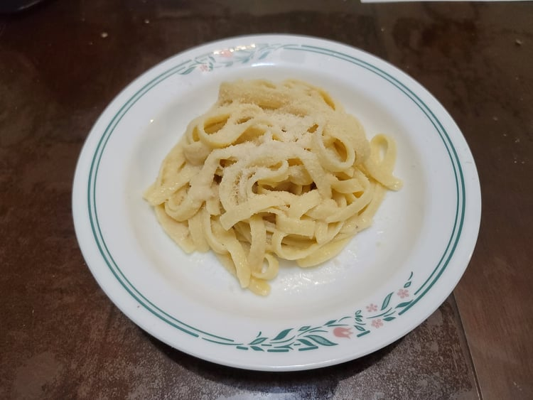

Fettuccine Alfredo

Ingredients:
- 12 tbsp Butter
- 1 lb Dried Fettuccine
- 1 1/2 cup Parmesan
- 1/2 - 1 tsp Salt, or to taste
Instructions:
- Bring a pot of salted water to a boil. Add in the pasta and cook until al dente, about 11-12 minutes.
- While the pasta heats, gently melt the butter over medium heat in a large pan.
- Reduce the heat to medium low. Strain the pasta from the pot and place into the pan with the butter. Season with 1/2 teaspoon salt and toss well.
- Add parmesan and a ladles of hot pasta water incrementally, tossing the pasta continuously or mixing aggressively with tongs to incorporate the cheese.
- Taste the pasta and adjust the salt as necessary. Serve immediately.